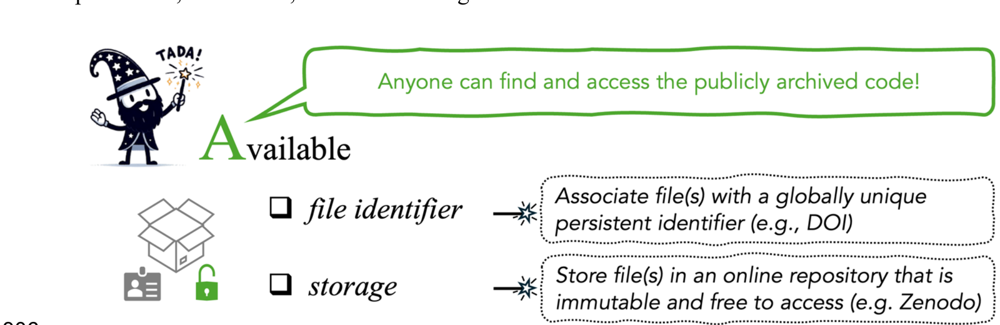

4 A — Available
Availability means publicly archiving the code so that anyone outside the project has long-term access to it. It covers two FAIR principles: Findable, through a unique identifier, and Accessible, because the code can be retrieved via that identifier.

Figure 4 from Ivimey-Cook et al.
There are two requirements:
- The code has an associated globally unique persistent identifier (PID), in practice a DOI.
- That identifier is cited in the corresponding manuscript.
4.1 Why GitHub is not an archive
GitHub is a good platform for developing code, with transparent version control and easy collaboration. For archiving the code behind a published paper, though, it fails on two counts:
- It has no persistent identifier. A GitHub URL is not a PID.
- It is not immutable. Files can be changed or deleted at any time, including after the manuscript is published. If the code behind a result is later edited or removed, that result can no longer be reproduced.
The same goes for similar platforms such as Codeberg, Bitbucket and GitLab.
You do not have to choose. Develop on GitHub and archive on Zenodo. Link the repository to Zenodo and create a release on GitHub. Zenodo copies that release and mints a DOI for it. See https://help.zenodo.org/docs/profile/linking-accounts/.
4.2 Where to archive
You need a repository that is immutable, free to access and assigns a DOI.
| Repository | PID | Immutable | Notes |
|---|---|---|---|
| Zenodo | DOI | Yes | Connects directly to a GitHub project. Gives a base project-level DOI as well as version-specific DOIs. You can choose the licence at deposit; CC-BY 4.0 is the default. |
| Figshare | DOI | Yes | General-purpose, and widely used for code and supplementary material. Assigns CC0 by default. |
| Dryad | DOI | Yes | Data-focused, and mandates CC0, which is not well suited to code (see licences). Code uploaded to Dryad as software is published on Zenodo instead (Lowenberg 2021). |
| Dataverse | DOI | Yes | General-purpose. Published versions are fixed: editing a published dataset creates a new draft version (Dataverse Project n.d.). |
| Software Heritage | SWHID | Yes | Preserves GitHub projects for long-term storage and provides PIDs as Software Hash Identifiers. |
| OSF | DOI | No | Widely used, and supports anonymised links for double-blind review, but the SORTEE guidelines note that it does not provide file immutability, so projects and files can be changed or deleted (Pick et al. 2026). Fine for review, but archive elsewhere. |
| Domain repositories (e.g. GenBank) | Accession no. | Yes | For sequences and other domain-specific deposits. Other PID types include ARK, Handle and RRID. |
| GitHub / GitLab / Bitbucket / Codeberg | None | No | Development platforms. Use for writing code, not for archiving it. |
Supplementary material is not archiving. The SORTEE guidelines say that data should not be provided only as supplementary material attached to the article online, because it has no globally unique persistent identifier and may not be open and accessible (Pick et al. 2026). The same goes for code. Everything must go in a public repository.
DOI versioning. On Zenodo, every update to the code gets a new DOI, and a base project-level DOI stays the same. Cite the version-specific DOI in your paper, because that is the version your results came from. Give the project-level DOI to someone who wants the latest version.
4.3 Cite the code in the manuscript
Archiving is only half of the requirement. The PID must also be cited in the manuscript, in the text and in the reference list, so the code can be found like any other cited work. The SORTEE guidelines require this for both data (Guideline 1.1) and code (Guideline 3.1; Pick et al. 2026).
A worked example:
In the data availability statement. All data and code needed to reproduce the analyses are archived on Zenodo: https://doi.org/10.5281/zenodo.0000000.
In the reference list. Ivimey-Cook, E. R. (2026). Code for: Caterpillar abundance varies with habitat (v1.0.0) [Computer software]. Zenodo. https://doi.org/10.5281/zenodo.0000000
4.4 Data and code in the same place
The SORTEE guidelines recommend archiving code files preferably in the same archived project as the data files (Guideline 3.1), which minimises problems with computational reproducibility (Pick et al. 2026). A reader gets one deposit, one DOI and one download, and the relative paths in your code keep working.
Sometimes this is not possible: some repositories treat data and code differently, and Dryad’s CC0-only licensing is a real constraint for code. In that case, archive them separately and link them in both READMEs. See Documented.
4.5 Consequences of not archiving
In the “pre-TADA” version of our worked example in the TADA paper, the code is not archived and has no DOI, so there is no permanent, immutable, citable copy of it (Ivimey-Cook et al. 2025).
Two things follow. A reader who finds the paper cannot reliably find the code, and if the working copy is edited or lost, the analysis behind the published result cannot be recovered.
4.6 Sensitive data and embargoes
Some data cannot be shared openly, including protected species locations, personal data and third-party data held under licence. The SORTEE guidelines allow for these cases and note that many repositories offer embargoes (Pick et al. 2026).
The exception normally applies to the data, not the code. Code that cannot run without restricted data is still worth archiving openly, because it documents exactly what was done.
Describe the restriction, and how to get legitimate access, in both the data availability statement and the README.
4.7 Anonymising for double-blind review
If your journal operates double-blind review, reviewers still need to see the code. There are two options:
- Submit anonymised data and code directly to the journal, for example as a zip file.
- Upload to a repository that supports anonymised review links, such as Figshare, the Open Science Framework (OSF), GitHub, or Dryad, though Dryad may charge a deposit fee.
The README can also be anonymised during peer review to comply with double-blind policies, then restored before archiving. See Documented.
4.8 Checklist
Try doing all of these to make the dog happy.
Next: Documented, on the README and the licence.